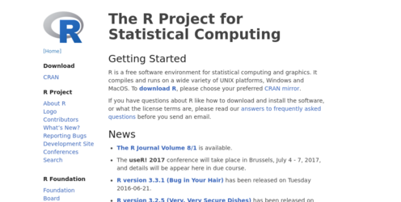
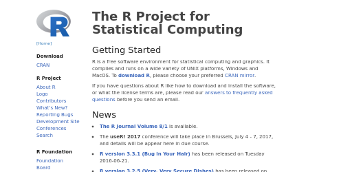

Note: webshot uses PhantomJS, which is a headless browser that stopped development in 2018. Please use webshot2, which uses Chromium-based browsers.
Webshot makes it easy to take screenshots of web pages from R. It can also:
runtime: shiny).See the introduction article for examples in addition to the ones below.
Webshot can be installed from CRAN. Webshot also requires the external program PhantomJS. You may either download PhantomJS from its website, or use the function webshot::install_phantomjs() to install it automatically.
install.packages("webshot")
webshot::install_phantomjs()By default, webshot will use a 992x744 pixel viewport (a virtual browser window) and take a screenshot of the entire page, even the portion outside the viewport.
library(webshot)
webshot("https://www.r-project.org/", "r.png")
webshot("https://www.r-project.org/", "r.pdf") # Can also output to PDFYou can clip it to just the viewport region:
webshot("https://www.r-project.org/", "r-viewport.png", cliprect = "viewport")You can also get screenshots of a portion of a web page using CSS selectors. If there are multiple matches for the CSS selector, it will use the first match.
webshot("https://www.r-project.org/", "r-sidebar.png", selector = ".sidebar")If you supply multiple CSS selectors, it will take a screenshot containing all of the selected items.
The clipping rectangle can be expanded to capture some area outside the selected items:
webshot("https://www.r-project.org/", "r-expand.png",
selector = "#getting-started",
expand = c(40, 20, 40, 20))You can take higher-resolution screenshots with the zoom option. This isn’t exactly the same as taking a screenshot with a HiDPI (“Retina”) device: it is like increasing the zoom to 200% in a desktop browser and doubling the height and width of the browser window. This differs from using a HiDPI device because some web pages load different, higher-resolution images when they know they will be displayed on a HiDPI device (but using zoom will not report that there is a HiDPI device).
webshot("https://www.r-project.org/", "r-sidebar-zoom.png",
selector = ".sidebar", zoom = 2)All parameters of function webshot. That means that multiple screenshots can be taken with a single command. When taking a lot of screenshots, vectorization can divide by 5 the execution time.
# Take a screenshot of different sites
webshot(c("https://www.r-project.org/", "https://github.com/wch/webshot"),
file = c("r.png", "webshot.png"))
# Save screenshots of the same site in different formats
webshot("https://www.r-project.org/", file = c("r.png", "r.pdf"))
# Take screenshots of different sections of the same site.
# Note that unlike arguments "url" and "file", a list is required to specify
# multiple selectors. This is also the case for arguments "cliprect" and
# "expand"
webshot("http://rstudio.github.io/leaflet/",
file = c("leaflet_features.png", "leaflet_install.png"),
selector = list("#features", "#installation"))The appshot() function will run a Shiny app locally in a separate R process, and take a screenshot of it. After taking the screenshot, it will kill the R process that is running the Shiny app.
# Get the directory of one of the Shiny examples
appdir <- system.file("examples", "01_hello", package="shiny")
appshot(appdir, "01_hello.png")The rmdshot() function takes screenshots of R Markdown documents. For static R Markdown documents, it renders them to HTML in a temporary directory (using rmarkdown::render())and then takes a screenshot.
For dynamic R Markdown documents, it runs them using rmarkdown::run() in a separate R process and then takes a screenshot. After taking the screenshot, it will kill the R process that is running the document.
rmdshot("document.rmd", "document.png")If you have GraphicsMagick (recommended) or ImageMagick installed, you can pass the result to resize() to resize the image after taking the screenshot. This can take any valid ImageMagick geometry specifictaion, like "75%", or "400x" (for an image 400 pixels wide). However, you may get different (and often better) results by using the zoom option: the fonts and graphical elements will render more sharply. However, compared to simply resizing, zooming out may result in slightly different positioning of text and layout elements.
You can also call shrink(), which runs OptiPNG to shrink the PNG file losslessly.
webshot("https://www.r-project.org/", "r-small-resized.png") %>%
resize("75%") %>%
shrink()
# Using zoom instead of resize()
webshot("https://www.r-project.org/", "r-small-zoomed.png", zoom = 0.75) %>%
shrink()
# Can specify pixel dimensions for resize()
webshot("https://www.r-project.org/", "r-small.png") %>%
resize("400x") %>%
shrink()To illustrate the difference between resize() and zoom, here is an image with resize("50%"):

And here is one with zoom = 0.5. If you look closely, you’ll see that the text and graphics are sharper. You’ll also see that the bullet points and text are positioned slightly differently:
